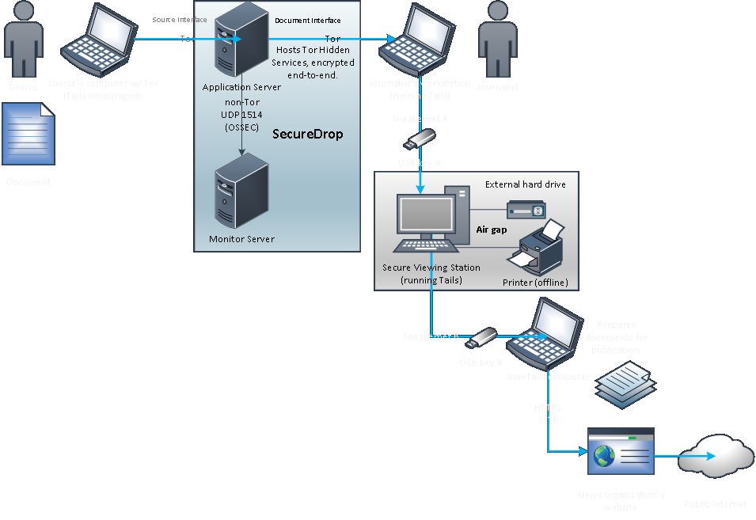
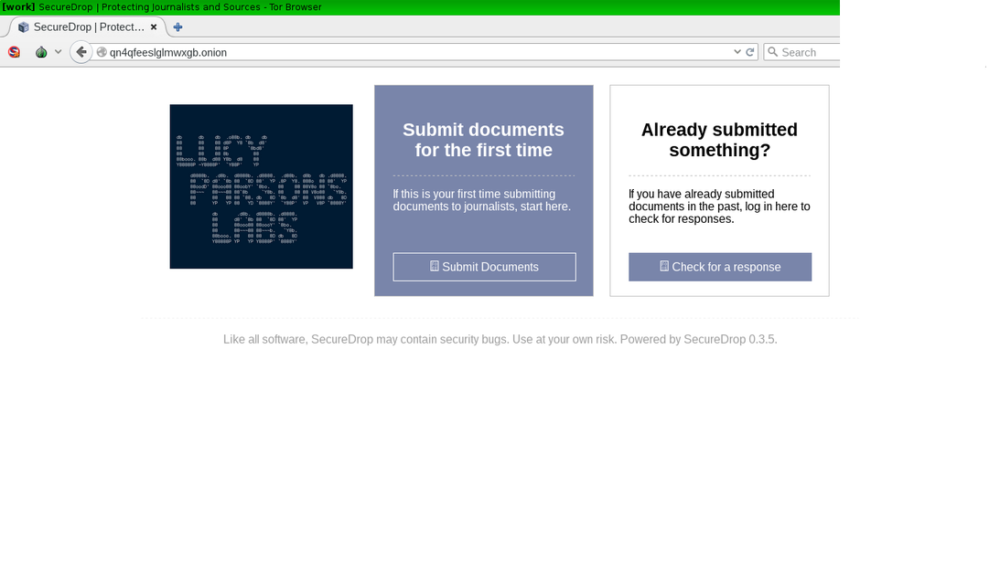

Jennifer Helsby (@redshiftzero) & Freddy Martinez (@B_meson)
for Lucy Parsons Labs (@lucyparsonslabs)
Who was Lucy Parsons?
She was a famous labor organizer and anarchist in Chicago during the late 19th century. Once described as "more dangerous than a thousand rioters" by Chicago Police and helped found the Industrial Workers of the World (IWW)
Board of Directors
Freddy Martinez
Jennifer Helsby
Brian Kroll
Mason Donahue
Our Mission
The Lucy Parsons Labs is a Chicago-based collaboration between data scientists, transparency activists, and technologists which focuses on the intersection of digital rights and on-the-streets issues
Previous Projects
- Surveillance Primer written by Jen https://redshiftzero.github.io/policesurveillance/
- Resource on identifying police officers who kill https://lucyparsonslabs.com/resources/
- Letter writing campaign for political prisoners

- Independent financial audit of where CPD's asset forfeiture funds are going
- CPD asset forfeiture funds were used to pay for surveillance devices like Stingray and ALPR
- Currently working with a local journalist to publish the first results of this investigation
- If you're interested in helping with FOIA see: https://www.muckrock.com/project/opening-the-chicago-surveillance-fund-25/
Limitations of FOIA
- Responses are usually late
- Responses are often over-redacted
- The most interesting records will require lawsuits to obtain
- Originally written by the late Aaron Swartz, currently maintained and developed by the Freedom of the Press Foundation
- An anonymous whistleblowing system that:
- Runs as a Tor Hidden Service for source anonymity
- Does not log data about your browser, device, etc.
- Encrypts submissions in transit and rest
SecureDrop Architecture
SecureDrop sites
25 public deployments in the world (including ours), including these places:
Full list on https://securedrop.org/directory
Source Interface
Journalists
Ali Winston, Center for Investigative Reporting
Covers law enforcement and surveillance
Paul Gottinger, Reader Supported News
Covers national security, the Middle East and US foreign policy
Leak Us Documents
Reveal illegality, waste, fraud, abuse, or public health issues or safety threats by governmental bodies and corporations using LPL's SecureDrop instance:
https://lucyparsonslabs.com/securedrop